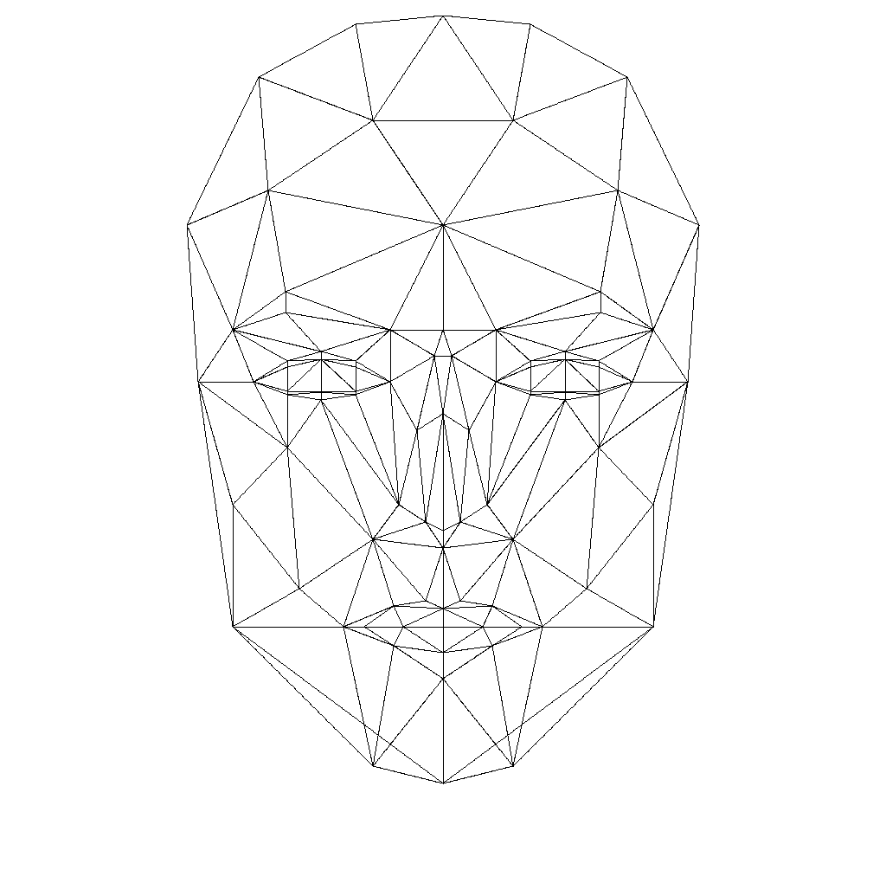
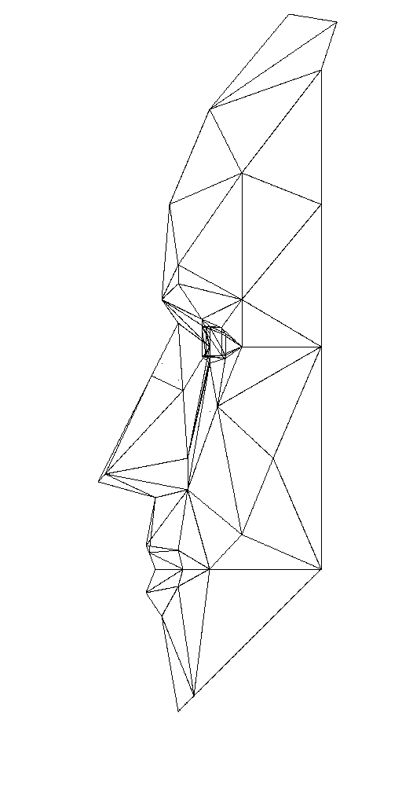
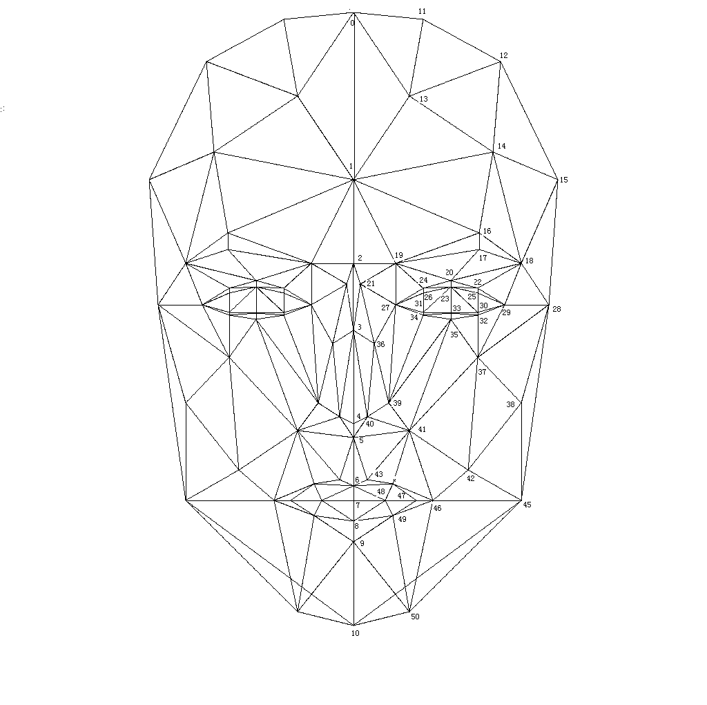

Candide-3人脸模型如下:

对Candide-3人脸模型加注顶点编号后的人脸模型:

人脸上各顶点的坐标如x,y,z具有一定的变化范围，这个范围的确定是由各个顶点的邻居坐标决定的。例如某点的x坐标应该在其左边和右边顶点的之间，如果不在这个范围内，那么画出来的就不再是人脸。如左眼的内边跑进了右眼的眼球中。
当选择只优化人脸的某一部分，如额头或眼睛等时，人脸其余的顶点采用默认坐标值，即在FaceVertextData中给出的值。而被优化的人脸部分的点的变化范围，由FaceVertextData中的方法getRandomScope()给出，这也是变量的取值范围。
后期可以开展的工作，包括人脸的各个部分分别优化，当停止优化时，保存优化的值；后面可以在此基础上继续优化或优化其他部分，从而实现了一种持续优化。显然，持续优化是一种面向实际的优化方法，而不仅仅是做做简单的实验而已。